You could stand on the campfire stones
Problem
The collision was a small circle in the middle.
Solution
Now it matches the ring of stones.
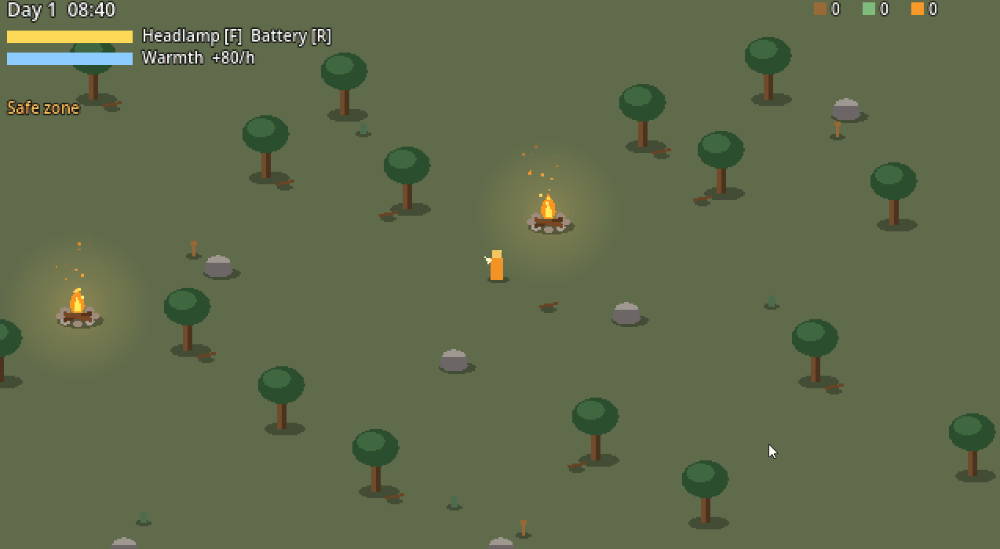
Goal: make it feel like a real game – progress is saved, there are menus, and the world goes on day after day.
Problem
The collision was a small circle in the middle.
Solution
Now it matches the ring of stones.

Problem
After 2–3 nights the map was empty.
Solution
Now picked-up items are hidden and come back at dawn.
Problem
The player starts next to a campfire, which counted as a visit and autosaved.
Solution
Now autosave waits until you load or start a new game.
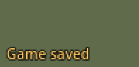
Problem
You didn't know if the fire would last.
Solution
Now the menu warns "fire may go out" in red.
Before the warning: resting twice in a row until the fire went out.
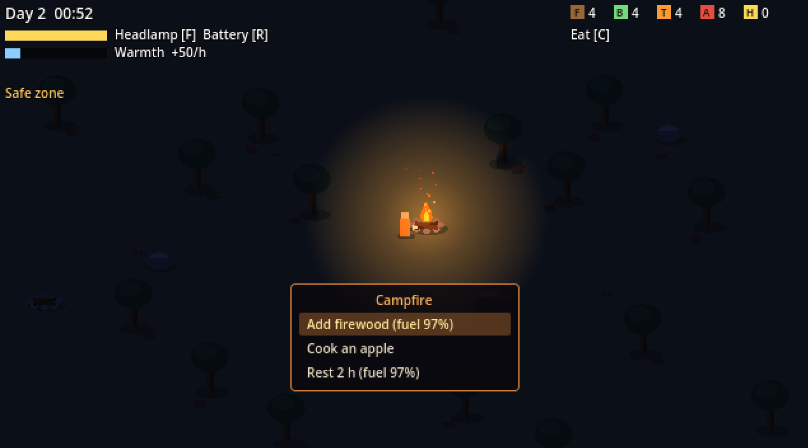
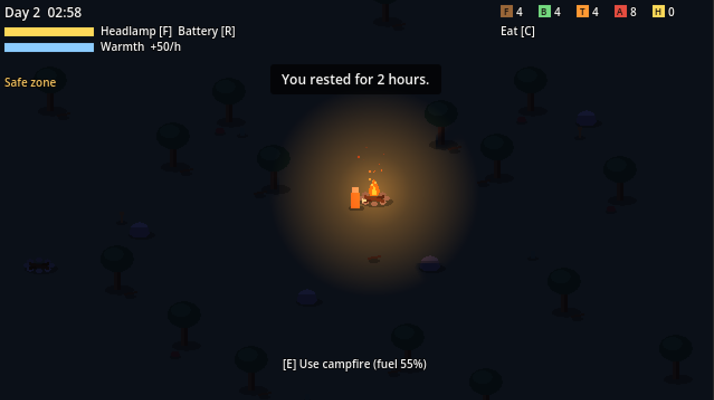
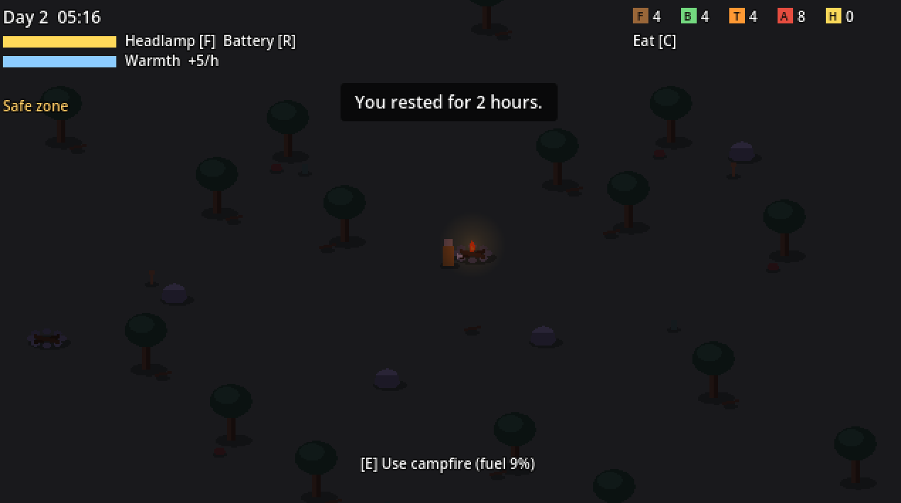
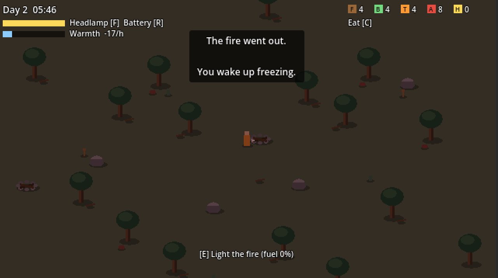
Problem
The campfire light was too big and too strong on the green ground.
Solution
I made it a deep blue night with the campfire as the only warm light.
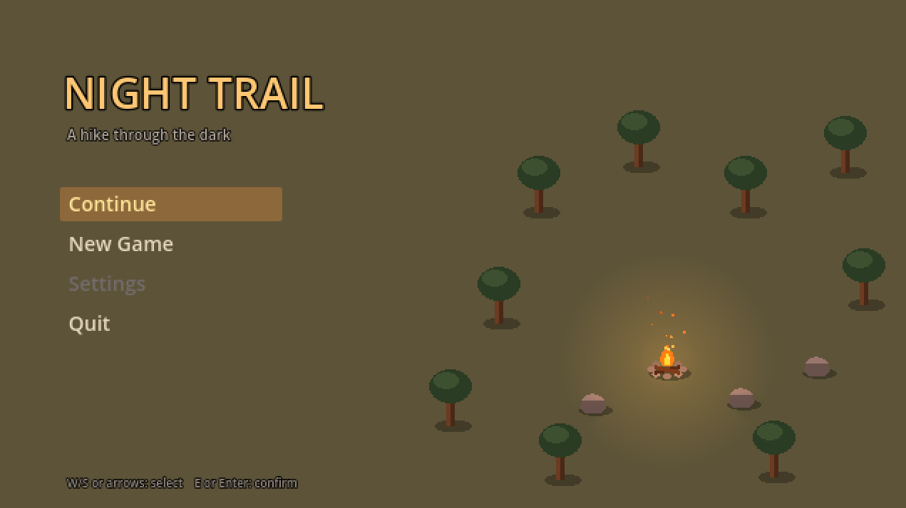

Problem
Both counters were the same orange colour.
Solution
Every item now has its own colour and letter.
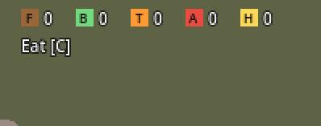
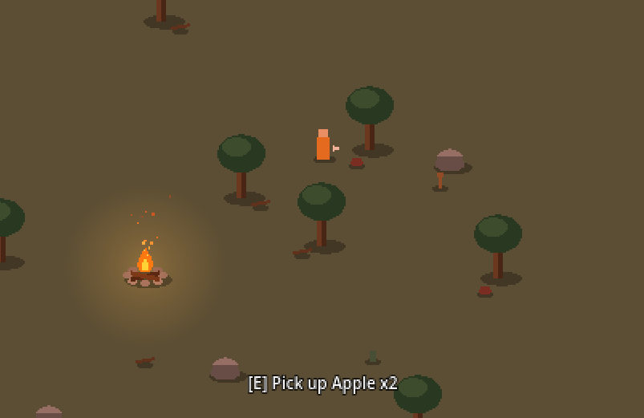
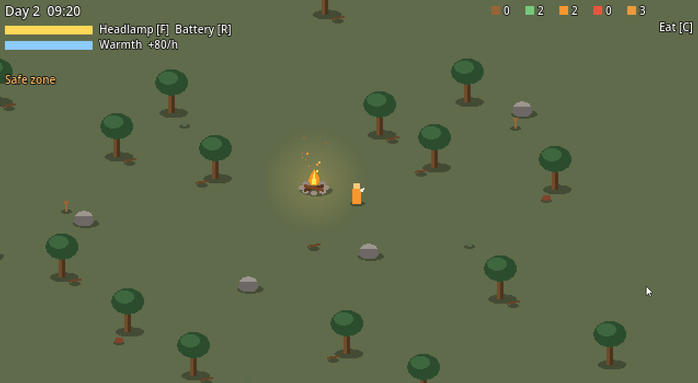
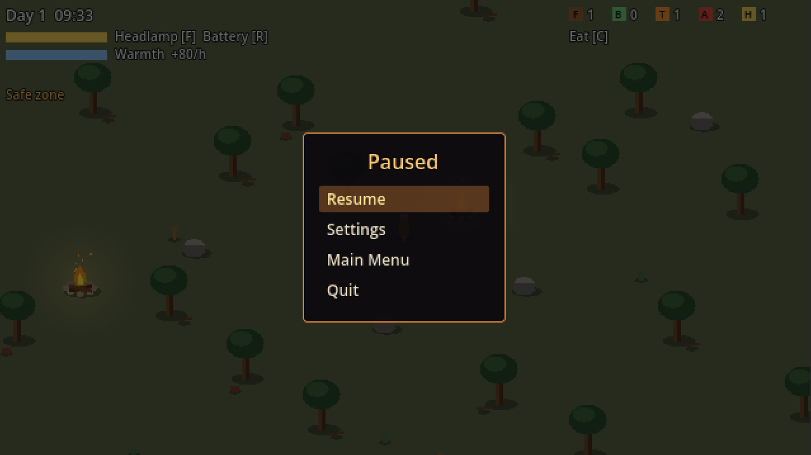
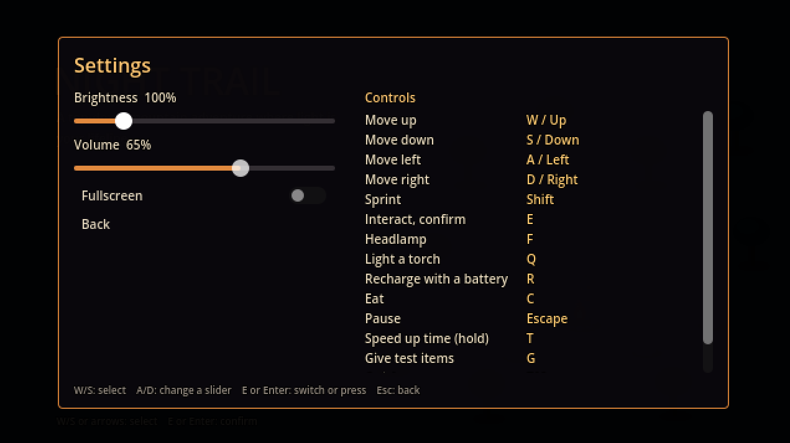
Sprint 4 is about the trail: